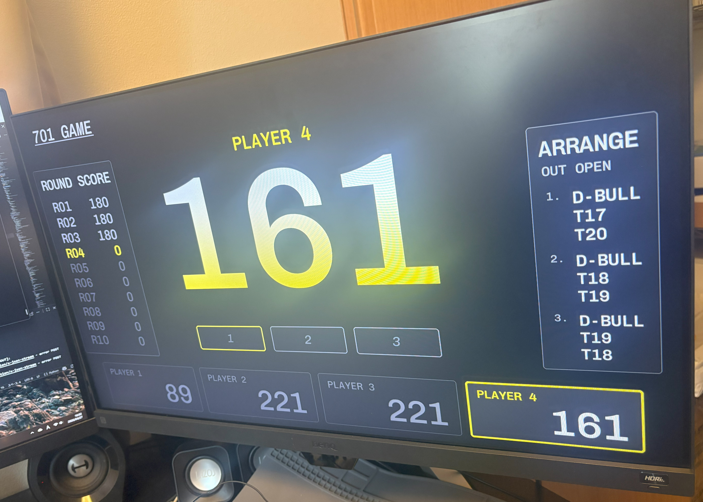

サポート終了したダーツマシンの再生
メーカーサポート終了により補修部品の入手が困難となった 業務用ダーツマシンに対し、制御システムを独自開発基板へ 置き換えることで、既存筐体を活かした再生を実現しました。

概要
業務用ダーツマシンは、ゲームソフトウェアを搭載した コンピュータと、盤面判定、LED装飾、コイン投入などを扱う 専用I/O回路によって構成されています。
本事例では、サポート終了により修理や補修が困難となった 既存筐体に対して、Raspberry Pi Compute Module 4を搭載した 専用制御基板を新規設計しました。
制御系を全面的に置き換えることで、機械部分や筐体を活かしたまま、 再び店舗で運用できる状態へ再生しています。
課題
ダーツというゲーム自体は大きく変わらない一方で、 メーカーサポート終了後は補修部品の入手が困難となり、 故障した店舗では高額な新台への入れ替えが必要となっていました。
筐体や盤面などの機械部分はまだ使用できるにもかかわらず、 電子制御部品の故障によって機器全体が使用できなくなることが 大きな課題でした。
提案
既存筐体をそのまま活かし、内部の制御システムのみを 独自開発基板へ置き換える構成を提案しました。
これにより、店舗側は筐体全体を買い替えることなく、 制御系の更新によってダーツマシンを再稼働できます。
当初は故障の多い周辺部品の互換機提供から開始し、 現場で得られた知見を反映しながら段階的に開発範囲を拡大しました。 最終的には、オリジナルのダーツゲームを搭載した メイン制御部まで提供可能な構成としています。
開発内容
制御基板にはRaspberry Pi Compute Module 4を採用し、 盤面判定回路、LED装飾制御、コイン投入制御など、 ダーツマシンに必要な専用I/O機能を1枚の基板へ統合しました。
回路設計と基板設計を行い、製造委託先で製造された基板を 最終検査したうえで提供しています。
ソフトウェア面では、組込みLinux上で動作する制御ソフトウェアと、 店舗利用を想定したオリジナルダーツゲームを開発しました。
また、現地で不具合が発生した場合や機能改善が必要となった場合に 迅速に対応できるよう、オンラインアップデート機能も実装しています。

成果
本システムは、業務用ダーツマシン向け制御基板として 約3年間継続して提供され、卸先を通じて全国約300店舗規模に 導入されました。
店舗側は既存筐体を活かしながら制御系のみを置き換えることで、 サポート終了機器を再び営業利用できる状態にすることができました。
担当範囲
本事例では、単なる基板設計やソフトウェア開発にとどまらず、 既存機器の動作解析から、専用制御基板、組込みソフトウェア、 ゲームソフトウェア、製造後検査、継続的なアップデート対応まで 一貫して担当しました。
- 既存機器の動作解析
- 専用制御基板の回路設計・基板設計
- Raspberry Pi Compute Module 4を用いた組込みLinux環境の構築
- 盤面判定、LED装飾、コイン投入などのI/O制御
- オリジナルダーツゲームの開発
- オンラインアップデート機能の実装
- 基板製造の委託管理と製造後検査
- 量産品の継続提供
この事例で示せること
本事例は、単にダーツマシンを開発した事例ではありません。 メーカーサポートが終了した業務用機器を解析し、 専用ハードウェアとソフトウェアによって再生・延命した事例です。
古い設備を活かしたい、メーカーによる補修ができなくなった 機器を再生したい、市販品では実現できない専用制御システムを 作りたい、といった案件にも応用できます。
既存設備を活かした改修・再生にも対応します
補修部品が入手できない機器や、 メーカーサポートが終了した設備についても、 現在の構成を解析し、再利用できる部分を活かした 現実的な改修方法をご提案します。
開発について相談する